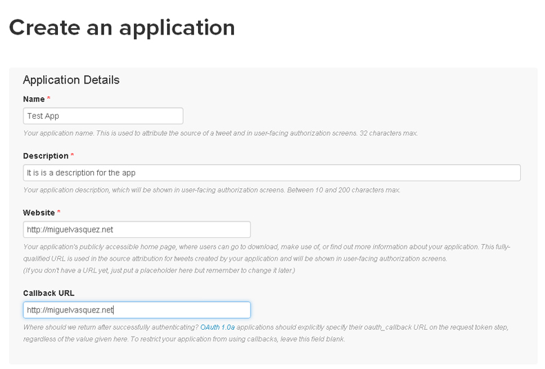
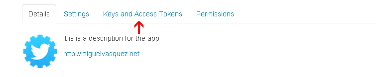
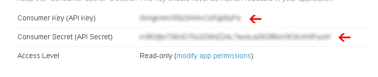
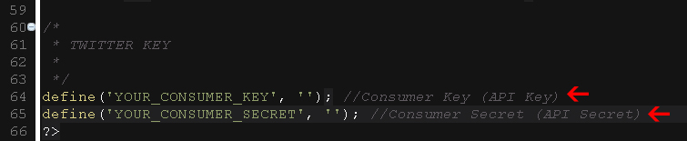

Created: 12, October 2014
By: Miguel Vasquez
Email: miguelvasquezweb@gmail.com
Thank you for purchasing my script. If you have any questions that are beyond the scope of this help file, please feel free to email via miguelvasquezweb@gmail.com Thanks so much!
Social Microblogging PRO Twitter is a script style, designed to share news, events, or simply what you want, through publications of 140 characters, and may refer to other users, create Hashtag and share with other site users. a part of it can upload images, videos from Youtube, DailyMotion, Screenr, DotSub, Hulu (Permitted users only united states ) or Vimeo. Follow other users, send direct messages.
if your URL in Db.php is well: http://site.com can not enter if the URL have the www To not have that problem with this can add to .htaccess the following code:
RewriteEngine On
RewriteCond %{HTTP_HOST} ^(www\.yousite\.com)(:80)? [NC]
RewriteRule ^(.*) http://yousite.com/$1 [R=301,L]
If you want your site to always be so: yousite.com And if you want it that way: www.yousite.com add this then:
RewriteEngine On
RewriteCond %{HTTP_HOST} ^(yousite\.com)(:80)? [NC]
RewriteRule ^(.*) http://www.yousite.com/$1 [R=301,L]
Important Do not delete the other lines. Htaccess If the problem persists, verify that the "mbstring" is enabled
This script works with PHP 5.4 and MySQL 5. The first thing to do is:
A) upload the folder "Script" to the "public_html" folder on your server.
B) Log into your phpMyAdmin and import the social.sql file located in the folder "Mysql" (NOTE: the database already must be created )
Make sure PDO driver is enabled on your server, if not, you should ask your hosting provider activation of this driver, so that the script can work.
After you have uploaded all files can start to setup the files.
$config->set('dbname', 'DATABASE NAME'); //<-- DATABASE NAME
$config->set('dbuser', 'USER'); //<-- USER
$config->set('dbpass', 'PASS'); //<-- PASS
define('URL_BASE', 'http://yousite.com/'); //<-- IMPORTANT: place a backslash at the end
In admin panel you can:
Access to admin panelhttp://yousite.com/admin/ //<-- IMPORTANT: place a backslash at the end User: Admin Pass: 12345
1) Enter https://apps.twitter.com/
2) Click on "Create New App"
4) Fill out all fields
5) Read "Developer Rules of the Road" and then click "Create your Twitter application"
6) Click "Keys and Access Tokens"
7) Open file application/DataConfig.php
Copy the code in the following way:
define('YOUR_CONSUMER_KEY', 'Consumer Key (API Key)'); //Consumer Key (API Key)
define('YOUR_CONSUMER_SECRET', 'Consumer Secret (API Secret)'); //Consumer Secret (API Secret)
* If you do not want to let registered users from Twitter is empty variables so
define('YOUR_CONSUMER_KEY', ''); //Consumer Key (API Key)
define('YOUR_CONSUMER_SECRET', ''); //Consumer Secret (API Secret)
Changing the logo
Changing the favicon
Change the background to the main page
Change the default link color
Change default image advertising
Change default avatar
Backgrounds default page "Design"
Go to application / DataConfig.php line 31
define( 'SMTP_HOST', '' ); //Specify main and backup SMTP servers - smtp1.example.com;smtp2.example.com define( 'SMTP_USERNAME', '' ); //SMTP username define( 'SMTP_PASSWORD', '' ); //SMTP password define( 'SMTP_PORT', 587 ); //TCP port to connect to
Should fill the relevant details of your SMTP provider and the script will use it automatically.
IMPORTANT: If after you do not use the SMTP option only leave as it was before
To call the SiteMaps must place the following URL
-> http://yousite.com/public/sitemaps/sitemaps.xml
I've used the following files as listed.
Miguel Vasquez